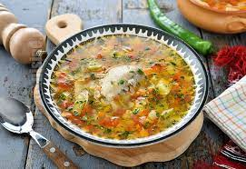

Ciorba

Description
Ciorba mea de vacuta, dupa reteta mamei, este delicioasa, iar intr-o zi atat de friguroasa ca cea de astazi, a mers de minune.
Ingredients
- 700 g pulpa de vita cubulete
- 2 morcovi potriviti
- 1 ardei gras rosu
- 2 cartofi rosii medii
Steps
- Umplem o oala cu apa rece, adaugam 2 lingurite de sare si bucatile de carne de vita.
- Punem oala pe foc mic spre mediu si fierbem carnea cca 1h30m. In timp ce fierbe, eliminam spuma formata la suprafata.
- In momentul in care carnea se poate strapunge cu fuculita, adaugam ceapa tocata marunt, morcovii, telina si pastarnacul taiate in cubulete mici.